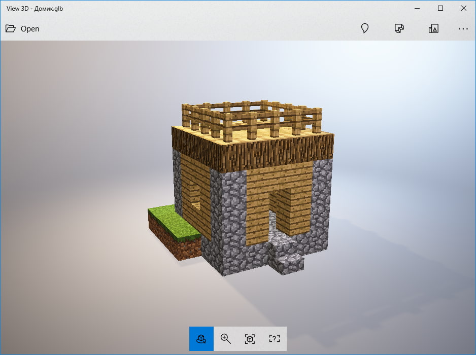

Головні блоки

3-де модель доміка
Блоки — это фундаментальные объекты, в большинстве случаев представляющие собой кубы, из которых состоит игровой мир и которые являются неотъемлемой частью геймплея. Вместе они создают физическую окружающую среду и могут быть собраны, преобразованы и установлены обратно в игровой мир. головні блоки майнкрафт: земля, незерский блок, блок края. Всі сторони здебільшого блоків має текстуру з дозволом 16 × 16 пікселів, а обсяг повного блоку пропорційний одному кубічному метру. [1] Більшість блоків є статичними, однак вода, лава, поршні і інші блоки можуть змінювати своє місце розташування при певних обставинах. На даний момент існує більше сотні типів блоків (включаючи повітря, джерела води і лави, різні типи деревини, натискних пластин, плит та ступенів, вовни і т. Д.). У статті Нумерація даних представлений повний список блоків і їх ID. Найпростіша класифікація блоків - класифікація на натуральні і рукотворні блоки. Натуральні блоки - це ті блоки, які генеруються при створенні світу і не можуть бути створені гравцем. Рукотворні - блоки, які мають крафт, за яким гравець може створити даний блок у себе в інвентарі або за допомогою верстата. У той же час рукотворні блоки можуть бути згенеровані при створенні світу в селах, скарбницях, фортецях, шахтах, містах Краї, Данжі і фортах розбійників. Технічні блоки - це функціональні блоки, які нерозривно пов'язані з іншими блоками. Дані блоки не можуть бути отримані в режимі виживання без застосування команд консолі і / або сторонніх модифікацій. Більш того, багато технічних блоки не можуть бути отримані навіть за допомогою спеціальних команд. При отриманні дані блоки зазвичай мають відсутню текстуру. |